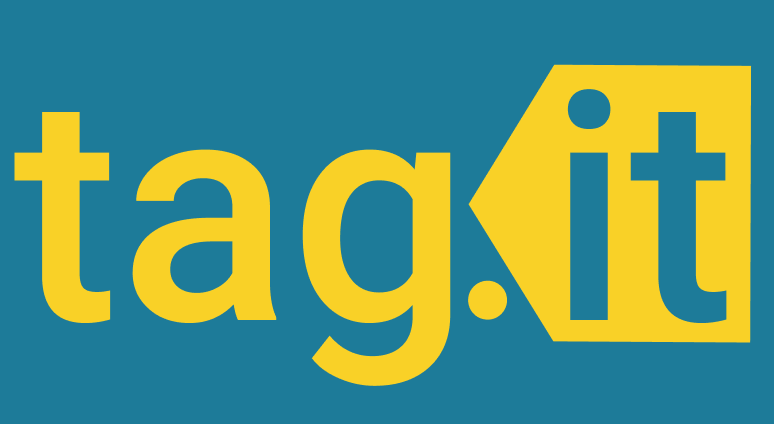

Tag.it: A Piazza Redesign
Innovating a cleaner and more intuitive interface for the widely-used Piazza forum platform
Piazza is a platform used widely by school courses for students to ask questions in a forum-style format where they can receive help from instructors and other students.
During my second year of college, I was the front-end software development lead for a class project aimed at redesigning the Piazza interface to be more intuitive and sleeker.
The Problem
Students and instructors need to have an intuitive way of centralizing course information and discussion to effectively communicate with each other and progress through the class.
Some background
During my time at college, I noticed that a lot of classes frequently use platforms such as Piazza to communicate important course information as well as serve as a hub for student questions and answers. These platforms greatly shorten the amount of time it takes for students to receive help on assignments and provide a means of deepening their understanding of course material through engaging discussions.
However, several of my fellow classmates and I came to agreement that the interface for the Piazza platform was inflexible, unaesthetic, and fairly unintuitive. This could be a major issue for many students as well as instructors, especially those who teach large class sizes, since a poorly-designed interface could impede the communication between them, leading to a slew of other potential hindrances and problems.
There was a lot that could be improved upon in terms of the site's design, and thus, we as a team of 10 decided to engineer an innovative full-stack web application to address these issues.
User Research
Before we came up with our application and started development, we wanted to explore whether or not other students felt the same lack of intuitiveness from Piazza that our team did. We also wanted to hone in on specific aspects of the interface that could be improved or revised, so we spent some time researching those as well.
Current Piazza users
In order to understand how other users felt about Piazza, we sent out a survey to a large audience of college students at UC San Diego. In this survey, we asked users various questions regarding the Piazza platform, and many of them pointed out that while the platform was useful, they had a couple of complaints regarding the interface.
In regards to the complaints they had with Piazza, some users claimed that the searching capabilities were less than optimal, often not being able to match searched keywords with the proper posts. Other users mentioned wanting more options to filter through posts instead of having to scroll through all of them to find the answers they were looking for. Additionally, a recurring qualm with the site was the unappealing aesthetic with small fonts and inflexible color options.
Overall pain points
From our survey, as well as reaching out to a few professors with similar questions, we discovered several main pain points with Piazza:
-
Filtering and searching for posts can be buggy and inflexible — it can be difficult to find specific posts even with exact keywords since the search bar sometimes provides incorrect results, and filtering by folders does not allow additional searching or filtering by multiple folders.
-
The interface lacks a cohesive aesthetic — many of the fonts are too small, resulting in some components going unnoticed, and the current color options are limited and sometimes result in glitched contrasting colors.
-
Many interface components are unintuitive or unbeknownst to users — some features such as the reading list and post history slider are somewhat awkward to users who haven't used them before, and other features such as the company search and resume profile go entirely unused.
The Solution
After consolidating our research and figuring out the main pain points that we had to address, we finally decided to settle on creating a full-stack web application aimed to showcase a potential redesign of Piazza. Our goal was to make sure that the application was slimmer both in terms of aesthetic and functionality to ensure that users would have a pleasant and uncluttered experience.
In order to differentiate our application from Piazza, we chose to focus on improving the searching and filtering functionalities, which were the major complaints with the latter. To do so, we framed the design of our app around a tagging system which would allow users to label their posts with tags and find posts based on those tags. This tagging system became our key feature, inspiring the name of our app, Tag.it.
Things to keep in mind
In creating our solution, however, we also needed to keep in mind several ideas that came up during initial planning.
We didn't want to create an entirely different interface because we felt that Piazza's Q&A forum style was already pretty useful, so we didn't see the need to change the site's underlying interaction format.
One of the purposes of our application was to make the aesthetic cleaner, so we needed to make sure that text and interface components were easy to see and uncluttered throughout the whole development process.
Before we started developing, we created several design documents, such as a list of use cases and user stories, to help guide our thoughts when creating our application and ensure that our application was meeting the goals we set for ourselves.
Tech-ing It Up a Notch
As a project for a software engineering class, Tag.it was developed with a very programming-centric mindset, employing the use of many different technologies and practices commonly found in the software engineering industry. We split up work into two main areas of focus, front-end and back-end development.
Technologies used
For front-end development, we chose to develop the interface using React, HTML, CSS, and JavaScript. Although our front-end developers, including myself, initially didn't have too much experience with React, we quickly ramped up and started writing barebones components.
With the back end, our developers mainly used Node.js and Express to set up the necessary REST API endpoints, as well as Firebase for our primary database to store application information such as posts and users.
Besides front-end and back-end technologies, we also utilized the Mocha and Chai testing libraries to ensure proper feature functionalities. Additionally, we used Git and Github for version control and Netlify and Heroku for deployment of our code to production.

How we implemented our site
In regards to work management, we utilized agile software development practices to divide work by person, separating tasks into granular user stories to ensure that we iterated rapidly and constantly built upon our app to make solid progress. At the same time, we kept track of progress using our design documents to figure out a timeline for when each component needed to be completed by.
Week by week, we slowly built up our site, first wireframing all of our application's screens, then adding onto them with smaller interface components to handle the required user interactions. As we were building more and more front-end components, we also connected them to the back-end API endpoints we built at the same time to finalize functionalities. Lastly, we fine-tuned our initial database schemas to streamline database requests and lessen the amount of time needed to load data and information on application pages, especially in regards to posts.
Testing
Throughout our development process, we frequently tested features to ensure that they worked as the project continued to be built. We did this through the Mocha and Chai testing frameworks to create test suites and assertions to check for initial errors, and then we had members of our team rotate to test development versions of the app as components were added.
Once we had a fully functional application and were almost ready to deploy to production, we spent a week on user testing to squash any remaining bugs, checking off all the test cases we wrote on a design document. Additionally, we allowed some external user testers play around with the app to see if they had any feedback on features that needed to be tweaked or improved upon.
Challenges we faced
During development, we faced a couple of challenges, mostly in regards to logistics and underestimation of technical difficulties.One challenge was figuring out which features to include or cut, since our initial brainstorm brought forth more ideas than were available to implement in the scope and timeframe of our project. Luckily, we were able to come to agreement on the features we deemed most important.
Another challenge we faced was communication, especially since the project was developed in a remote setting at the beginning of the COVID-19 pandemic. We initially had trouble communicating when certain application components were done, since some were dependent on others, but eventually we were able to resolve this issue with higher-quality status updates during meetings and the use of a project board to keep track of tasks.
The Final Product
After 10 weeks of hard work, we created a fully functional web application that worked similarly to Piazza, albeit with a cleaner aesthetic and more flexibility in terms of post interactions, especially searching and filtering by tags. Some of the features we included were:
-
Ability to find posts by search bar or by selecting tags
-
Fully functioning post editor with Markdown support
-
Interactive comment-reply system with upvoting similar to Reddit
-
Ability for instructors to manage course tags and staff
-
Ability to add multiple courses and invite students to a course using an invitation link

Reflecting at the End
In the end, we created a successfully deployed app that we were all proud of. Although we didn't quite meet all of the specifications we set for ourselves at the beginning of the project, we learned a great deal about agile software development and what it means to put into practice proper software engineering principles. I, myself, improved my own knowledge of full-stack development and technologies such as React and Node.js.
Moreover, we learned how to improve and redesign an already existing site while also taking into account "good" features that don't need to be revamped. And overall, we learned the immense work that goes into building platforms like Piazza, as well as keeping in mind the needs of students and instructional staff alike.
You can check out the project's source code on Github.